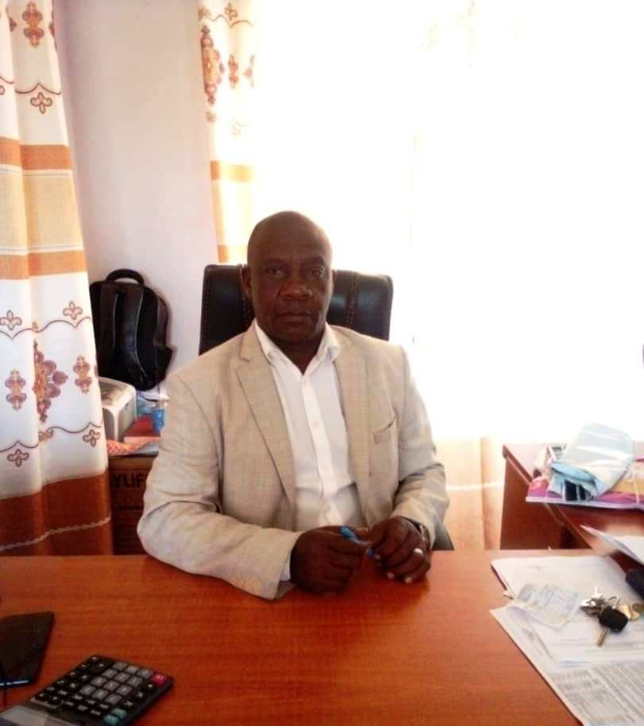

LYANTONDE SECONDARY SCHOOL - KASAMBYA
P.O.BOX 67, LYANTONDE-UGANDA
TEL: 0782800181 /0754 769577
Email: lyantondesecondaryschool@gmail.com
| HOME | ACADEMICS | PROJECTS | SPORTS | ONLINE FORM |
WELCOME TO LYANTONDE SS
About Us
This is a church of Uganda founded school established in 1986. Its Government-Aided, mixed with both Day and Boarding sections offering both Arts and Sciences at O & A' Level. The school is located just 1km off Masaka-Mbarara highway, Kaliiro road near Lyantonde Main Hospital.
Theme 2024: WALK THE TALK
| Mission | Vision | Core Values |
| To Impart skills, morals & academic knowlegde to learners. |
A multi-skilled morally
upright academically sounding learner |
Prayer, Honesty, Self control, Thinking Big Respect and Obedience, Generosity- Networking |
|  |
Head Teacher's MessagesI take this opportunity to welcome you to our website. I am glad you have taken keen interest in finding out and knowing more about Lyantonde Secondary School-Kasambya(LSSK). There is no doubt; you won’t go wrong finding more about us.” LSSK is very much aware of information and technology as a major tool to success, she is also aware that the world has become a global village. LSSK is an education institution that is dedicated to providing a holistic education that is, producing academically sound, physically fit, socially balanced and God-fearing citizens. This is attained by putting emphasis on academics, discipline and co-curricular activities. I must say, I am proud to be associated with LSSK, a school that is driven by her vision “To be a model school in the formation of God-fearing, academically excellent and responsible leaders.” We do our best to realize our dream and not just offer our vision lip-service; we do whatever it takes to "walk the talk". As Headmaster, I must comment that much as we have keen interest in academics, we have also dedicated ourselves to those learning activities outside the classroom and of course not forgetting the welfare of every member of the community. At the students’ level we have students’ leadership of different aspects to bridge a a gap between students' fraternity and Administration. Another area for consideration is the spiritual welfare of the community. LSSKs success and progress is grounded on the belief. “The fear of God is the beginning of wisdom.” As members of LSSK we consider ourselves to be born under lucky stars solely because our school is Church of Uganda founded, Our spiritual life and activities are centrally organized and facilitated by the school Chaplain; we count ourselves blessed to have a full time chaplain at campus. My dear visitor(s) once again allow me to express my heartfelt gratitude to you for taking off some time to find out and know more about LSSK. Surely your knowledge about us adds color to who we are. May you be blessed. |
|
Copyright
© 2024 Lyantonde Secondary
School- Kasambya
Designed by [Ssalongo Nyombi John]
|